Maple versteht unter einer (Ausdruck-)Folge die Aneinanderreihung von Ausdrücken, die durch Kommas getrennt sind. Die Reihenfolge der Elemente ist signifikant. Folgen mit gleichen Elementen in unterschiedlicher Reihenfolge sind verschiedene Objekte. Die Folge ist ein Basistyp von Maple: 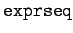.
| Beispiel |
| 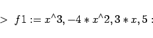 | (20.42a) |
definiert eine Folge, denn
| 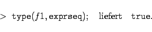 | (20.42b) |
Mit dem Befehl
| 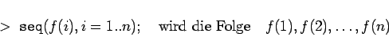 | (20.43) |
erzeugt.
| Beispiel |
|
Mit 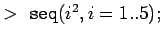 erhält man 1,4,9,16,25. |
Die Bereichsfunktion 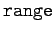 definiert Laufbereiche von ganzzahligen Variablen, die in der Form i=n..m dargestellt werden, und bewirkt, daß die Indexvariable i nacheinander die Werte 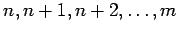 annimmt. Der Typ dieser Struktur lautet 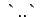.
Eine äquivalente Form der Erzeugung von Folgen bietet die vereinfachte Schreibweise
| 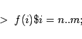 | (20.44) |
die ebenfalls 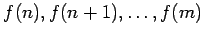 erzeugt. Entsprechend liefert 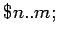 die Folge 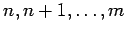 und 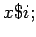 die Folge mit i Gliedern x.
| Beispiel |
|
Indizierte Variable (Namen) erzeugt man durch 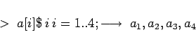
|
Folgen können durch Anhängen weiterer Glieder ergänzt werden:
| 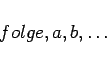 | (20.45) |
Klammert man eine Folge f in eckige Klammern, so entsteht eine Liste, die vom Typ 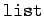 ist.
| Beispiel |
|
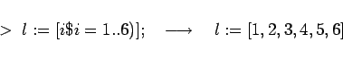
|
Mit dem schon bekannten Operator 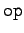 erhält man über 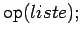 die der Liste zugrundeliegende Folge zurück.
Um Listen zu erweitern, sind sie zunächst mit 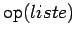 in Folgen umzuwandeln, diese dann entsprechend zu erweitern und mit eckigen Klammern erneut in Listen umzuwandeln.
Listen können als Elemente wiederum Listen enthalten, ihr Typ ist 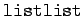. Strukturen dieser Art spielen bei der Konstruktion von Matrizen eine Rolle.
Der Zugriff auf Elemente einer Liste erfolgt mit dem Befehl 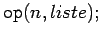. Dieser liefert das n-te Element der Liste. Einfacher ist es, wenn der Liste ein Name gegeben wurde, etwa L, und dann L[n]; aufgerufen wird. Bei einer zweifachen Liste findet man die Elemente auf der unteren Ebene mit 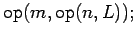 oder mit dem gleichbedeutenden Aufruf L[n][m];.
Es bereitet keine Schwierigkeit, Listen mit höherem Verschachtelungsgrad aufzubauen.
| Beispiel |
|
Erzeugung einer einfachen Liste: 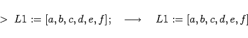
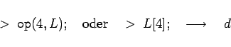
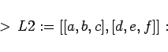
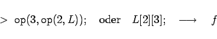
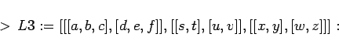
|